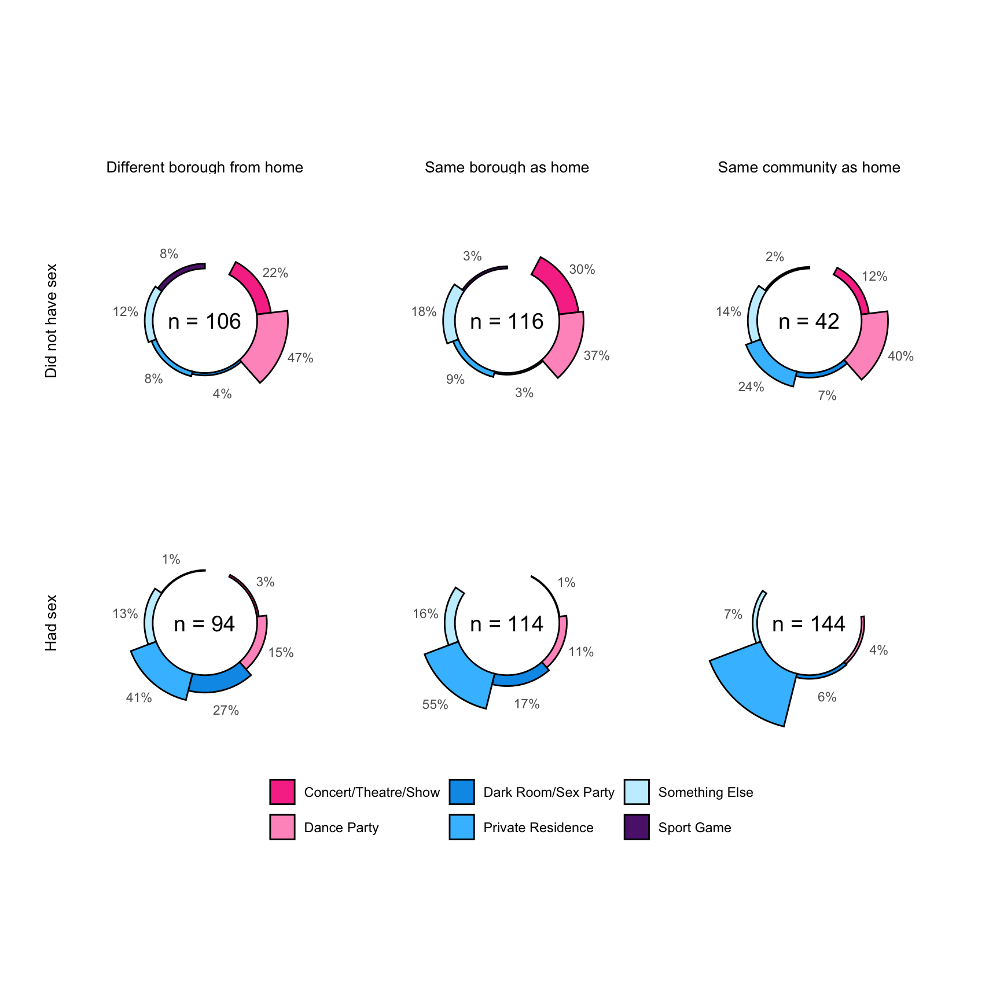
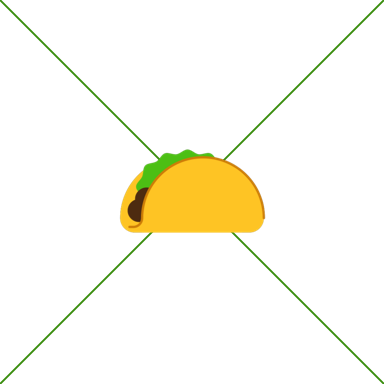

Code
# Access custom defined functions
targets::tar_source("../R_functions")# Access custom defined functions
targets::tar_source("../R_functions")
Of the \(604\) locations at which participant had physical or sexual contact in a group setting (contact venues), about two out of five were private residences, and about a quarter were dance parties. More than half of the contact venues were in Manhattan, while less than a third were in the Brooklyn. A quarter of all contact venues were in the same community as the participant’s residence, a third were in a different borough, and the remainder were in the same borough as home, but a different community district.
targets::tar_read(data_bipartite_graph_collected) |>
tidygraph::activate(edges) |>
data.frame() |>
dplyr::filter(!home) |>
dplyr::select("placeSex", "placeType", "place_borough", "distanceFromHome") |>
gtsummary::tbl_summary(by = placeSex) |>
gtsummary::add_overall(last = TRUE) |>
gtsummary::modify_spanning_header(c("stat_1", "stat_2", "stat_0") ~ "**Sexual contact at contact venue**") |>
gtsummary::add_p() |>
gtsummary::modify_header(label ~ "**Variable**") |>
gtsummary::bold_labels() |>
gtsummary::as_gt() |>
gt::tab_source_note(gt::md("*Data source: MPX NYC 2022*")) | Variable | Sexual contact at contact venue | p-value2 | ||
|---|---|---|---|---|
|
Did not have sex N = 2641 |
Had sex N = 3521 |
Overall N = 6161 |
||
| Place type | ||||
| Concert/Theatre/Show | 63 (24%) | 4 (1.1%) | 67 (11%) | |
| Dance Party | 110 (42%) | 33 (9.4%) | 143 (23%) | |
| Dark Room/Sex Party | 10 (3.8%) | 52 (15%) | 62 (10%) | |
| Private Residence | 28 (11%) | 222 (63%) | 250 (41%) | |
| Something Else | 40 (15%) | 40 (11%) | 80 (13%) | |
| Sport Game | 13 (4.9%) | 1 (0.3%) | 14 (2.3%) | |
| Place borough | 0.3 | |||
| Bronx | 6 (2.3%) | 18 (5.1%) | 24 (3.9%) | |
| Brooklyn | 84 (32%) | 96 (27%) | 180 (29%) | |
| Manhattan | 144 (55%) | 188 (53%) | 332 (54%) | |
| Queens | 29 (11%) | 48 (14%) | 77 (13%) | |
| Staten Island | 1 (0.4%) | 2 (0.6%) | 3 (0.5%) | |
| Distance from home | ||||
| Same Community District | 42 (16%) | 144 (41%) | 186 (30%) | |
| Same Borough | 116 (44%) | 114 (32%) | 230 (37%) | |
| Different Borough | 106 (40%) | 94 (27%) | 200 (32%) | |
| Data source: MPX NYC 2022 | ||||
| 1 n (%) | ||||
| 2 Pearson’s Chi-squared test; Fisher’s exact test | ||||
Contact venues at which participants had sexual contact (rather than non-sexual physical contact) were overwhelmingly private residences whereas contact venues at which they had non-sexual physical contact were mostly dance parties (see Figure 8.1). The closer to home a location was, the more likely it was to be a private residence and the more likely it was the site of sexual contact. By contrast, the further from home a contact venue was, the more likely it was to be a dance party.
plot_icon(icon_name = "taco", color = "dark_green", shape = 4)